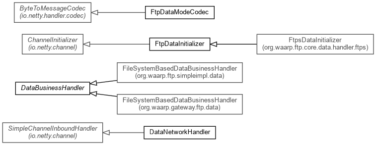

Package org.waarp.ftp.core.data.handler Description
Classes implementing Data connections
The internal logic is the following:
- When a connection is opened for data network:
It first tries to find
the corresponding session
setup from the control connection. Then it setups the FTP codec. Finally it
informs the FtpTransferControl
object that the data connection is opened and ready, such that the transfer
can start correctly.
- Each time a block is received:
the DataBlock is written into the
corresponding FtpFile according
to the status.
- If the operation is a retrieve
it writes the file to the data
channel (from FtpTransferControl)
and wake up the process of writing from channelInterestChanged in order to
prevent OOME.
- When an exception occurs
the data connection will be closed so as
the current transfer action
through the FtpTransferControl Object.
- When the connection is closed
the process tries to unbind if
necessary the parent connection (no
more connections will use this binded address) and then cleans all
attributes.